1. Phone video
Walk slowly around the room while filming.
Sharpest-frame picker keeps the crispest frame in each half-second window. Blurry frames are dropped.
NammaSpace turns an ordinary phone walkthrough into a photo-real 3D copy of the space that runs in your browser. Walls and furniture stop you, and you can search for a place and follow a walkable route to it. No install, no scanner, no hand modelling.
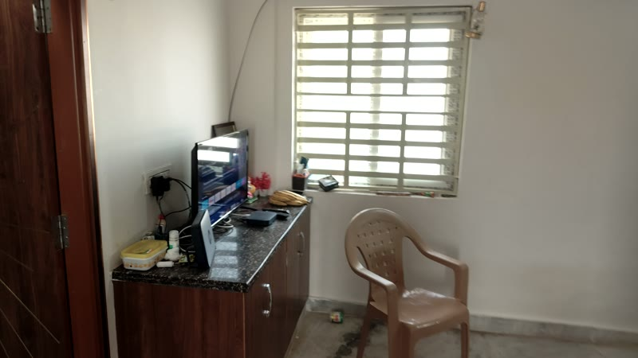
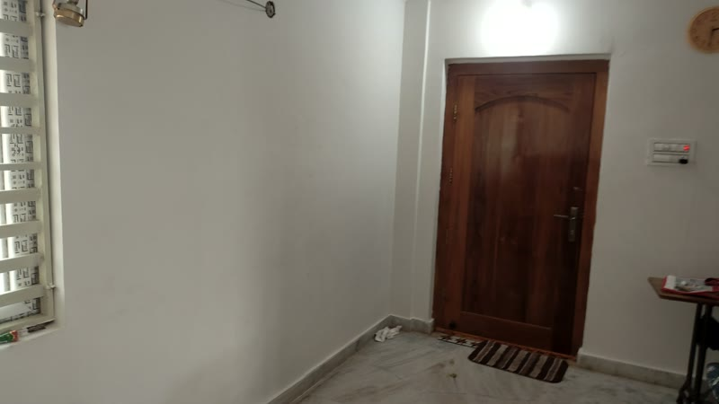
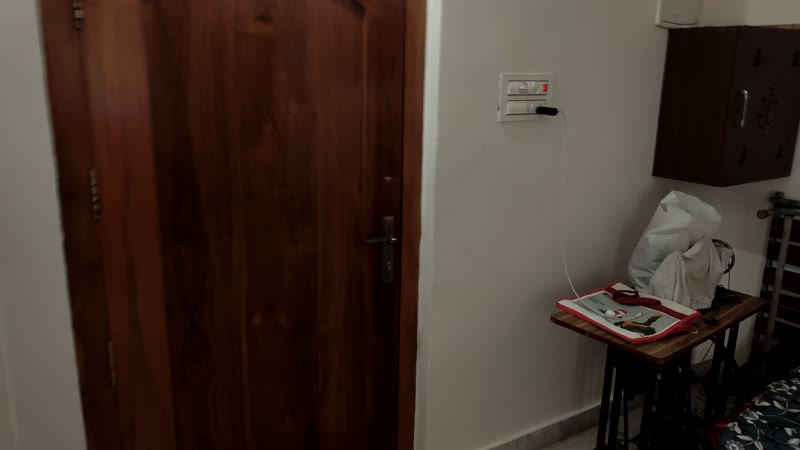
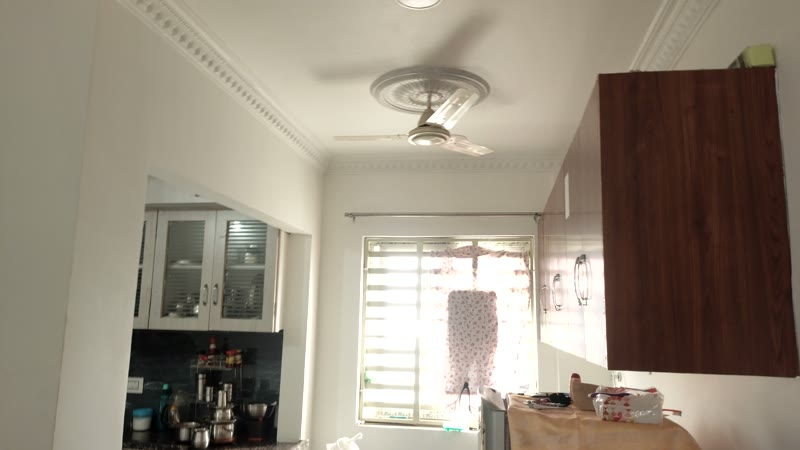
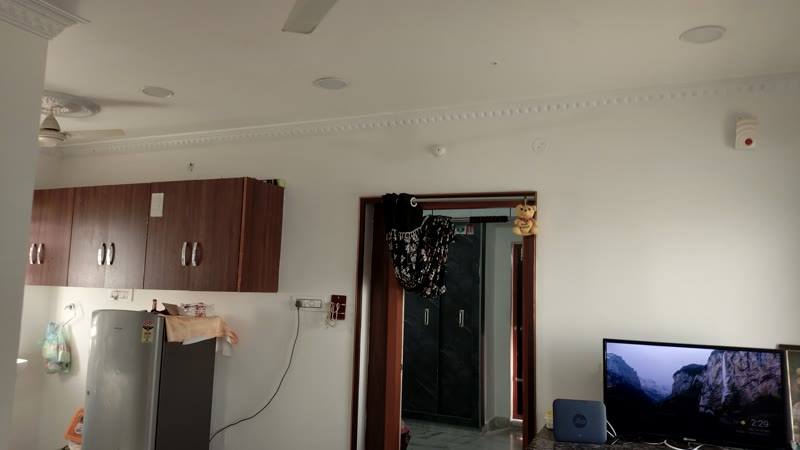
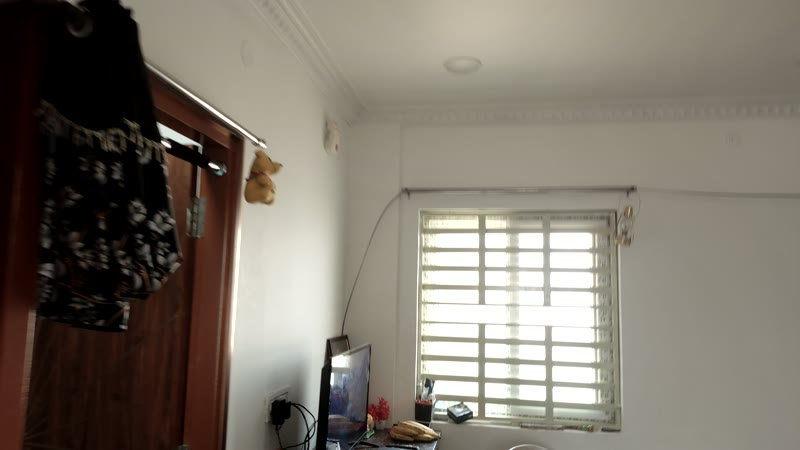
Every scene is one video and one reconstruction. We kept the earlier ones online so you can see what changed. Quality is scored on frames the model never saw during training.
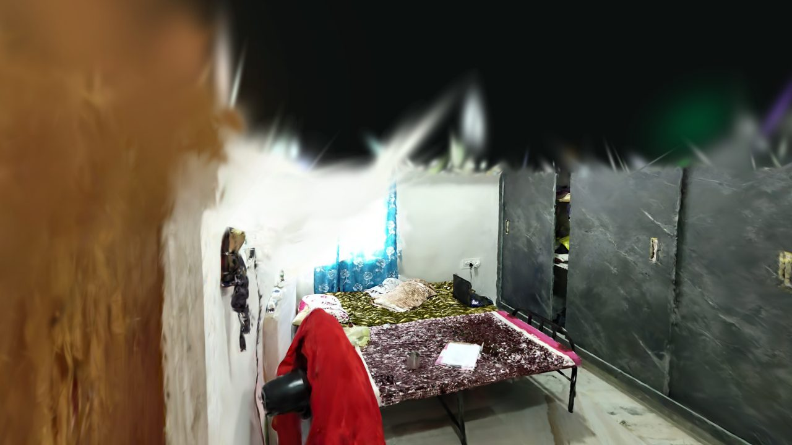
Experiment 1Our first bedroom reconstruction.
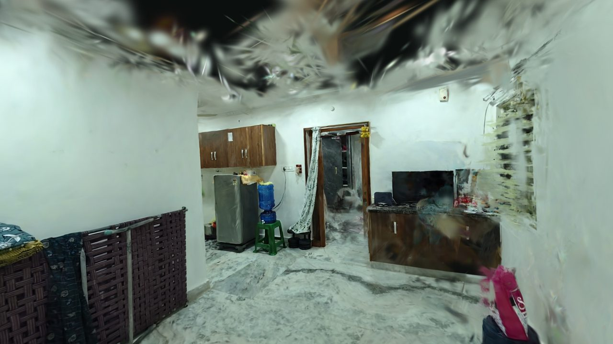
Experiment 2A longer walk from a hallway into a bedroom.
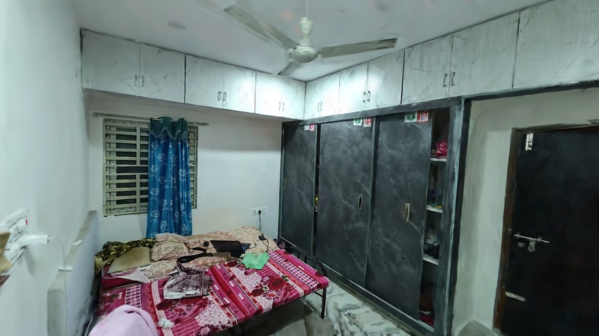
Experiment 3A real bedroom from one phone video.
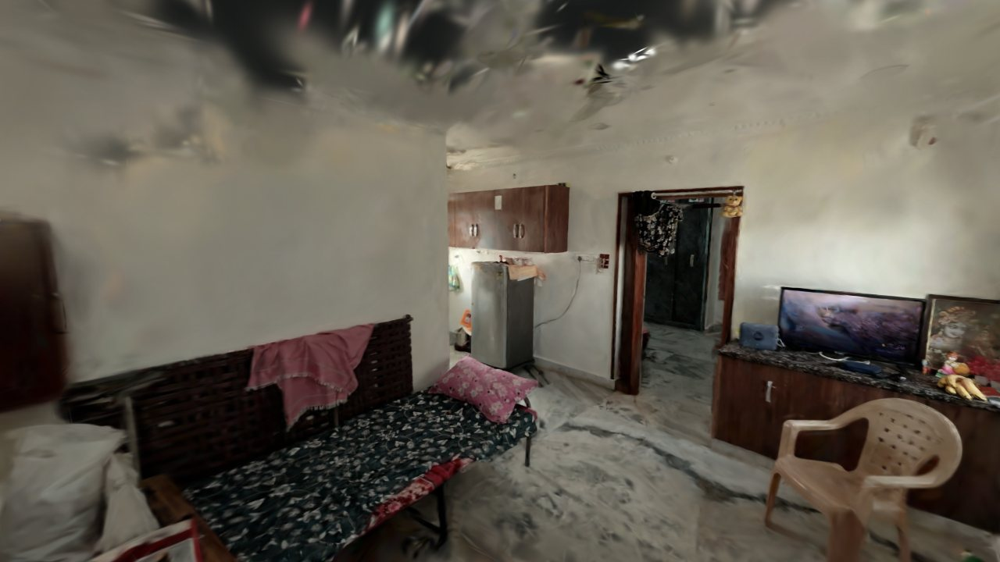
Experiment 4 · latestThe same kind of space as experiment 2, filmed in 4K.
| Scene | Frames | Splats | PSNR | SSIM | LPIPS | Training | Walkable floor |
|---|---|---|---|---|---|---|---|
| Early bedroom | not recorded | 700,000 shown | – | – | – | – | 8.1 m² |
| Hallway and bedroom | 868 | 650,654 | 26.46 dB | 0.874 | 0.244 | 995 s | 15.8 m² |
| Room | 613 | 541,337 | 27.14 dB | 0.913 | 0.191 | 819 s | 4.3 m² |
| Hallway and bedroom, 4K | 937 | 344,087 | 29.12 dB | 0.912 | 0.144 | 1,534 s | 11.3 m² |
PSNR and SSIM: higher is better. LPIPS: lower is better. Scores are measured on frames held out from training. Walkable floor is the area your body centre can reach after the 25 cm margin, so it is smaller than the room. Training times are not like for like: the first three ran on a lab GPU and the 4K scene on a free cloud GPU at half-size images. Splat counts are what each site shows after cleaning.
Four stages, one command each. A plain description on top, what actually runs underneath.
Walk slowly around the room while filming.
Sharpest-frame picker keeps the crispest frame in each half-second window. Blurry frames are dropped.
Work out where the camera was for every frame.
Structure-from-Motion solves each camera pose and a sparse point cloud. Poses are final and never re-run.
Grow a cloud of soft 3D blobs that reproduce the real views.
nerfstudio splatfacto, 30,000 steps. The first experiments trained on a lab RTX PRO 6000 Blackwell, the 4K scene on a free cloud T4.
Add floor, walls and furniture collision, then publish.
Floor-aligned and scaled, 10 cm grid with a 25 cm body margin, W A S D controls in a WebGL2 viewer.
Each scene is one 5 to 11 MB file streamed to a plain web page and drawn by our own WebGL2 splat renderer. Open a link and walk.
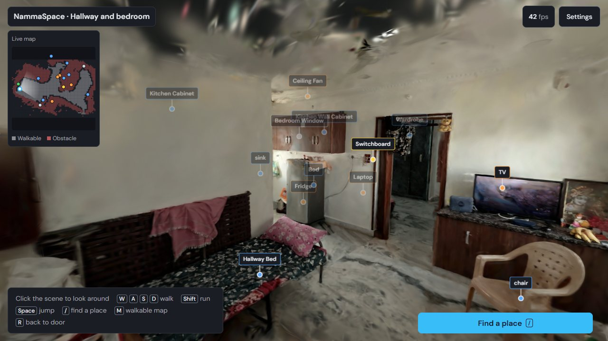
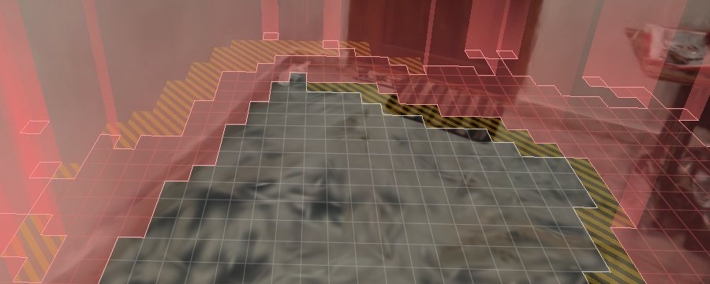